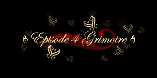

Chapter 1
Like a marathon runner drawn on a certain caramel box, with her hands held high
and with an idiotic cheeriness,…
This refers to the mascot for the Glico company, a Japanese sweets company that most
people overseas might recognize as the creators of Pocky.
<Good night, have a nice dream>
Some lines in Umineko were written in katakana English, meaning the phonetic
Japanese characters were used to sound out English.
In the Witch Hunt translation patch, these lines will be enclosed in <>, like <Have a
nice dream>.
Because they're written in katakana, they would be pronounced a little different than
you might expect. e.g. Ha ba naisu doriimu.
Chapter 2
Fumiya
This name probably comes from Fujiya, a famous and old Japanese confectionary
company.
Card Master Sakura
Obvious reference to “Cardcaptor Sakura” by Clamp (1996-2000). As you can see with
the context, it is yet again another anachronism. Interestingly enough, Sakura is
certainly matching Maria’s view about “witches” even if the former is rather a fluffy
magician.
Gao
As those who saw or read Air might know, 'gao' is a somewhat child-like way to say
'roar'. We can only assume that uryu is a wimpier version of this...
Shotoku Taishi
The man whose face was on the 10,000 yen note from 1957 to 1984 (about 55 dollars at
that time).
Chapter 3
Matcha
A type of powdered, high-quality green tea.
Chazuke
A Japanese dish of rice with green tea poured over it.
Green Car/Shinkansen
The Shinkansen is the world's busiest high-speed rail line, and a 'Green Car' is a type
of first-class car on Japanese trains.
Just as she stopped laughing, her features suddenly changed to look like a demon.
The word translated demon here is actually 'Hannya', a type of mask common in
Japanese Noh Theater that represents a jealous, female demon.
Chapter 5
Vessel
The Japanese word used here is 'yorishiro'.
A yorishiro is an object or person that acts as a physical entity for a spirit or god to
dwell in.
Chapter 8
It was supposed to be the Japanese word for gun (てっぽう/teppou)
The first characters kids learn to write in Japan are Hiragana, which is a phonetic set
like Katakana but used mainly for Japanese words instead of foreign ones.
For example, Katakana is used to pronounce the foreign word 'rifle', while the
Japanese word for gun, 'teppou', would be written in Kanji, or else hiragana if the
writer was a kid who hadn't learned Kanji yet.
There are several thousand Kanji in common use in Japan, so students keep on
learning more and more of them from elementary school until high school.
Sakutarou/kichi/suke
'tarou', 'kichi', and 'suke' are all typical endings to Japanese names. Maria must really
have liked Sakura…
Shiritori
This is a Japanese game where players take turns saying words that start with the last
syllable of the previous word. Anytime someone says a word that ends with nn (ん),
they lose, because no Japanese word starts with that sound.
E.G. Ootsuki->Kyrie->Ange->Jessica->Kanon
The person who said 'Kanon' loses.
Chapter 10
'I think, therefore I am'
Famous statement by René Descartes. Originally in French as “Je pense donc je suis”,
the line was then made in Latin as “Cogito ergo sum”. The meaning of this sentence
shows that if one is doubting their existence, they actually proved they exist, as there
has to be the “I” that makes the process of thinking.
Chapter 11
Let's go to 666 sometime soon to look at the clothes.
This is probably a reference to a famous department store in the Shibuya district of
Tokyo called '109'.
Chapter 13
110
This is the number for calling the police in Japan.
Chapter 14
La plata and Enoura theories
These 2 theories were actually posted on 2ch and on the official BBS.
Chapter 16
Yamanote/Touzai
Yamanote is one of Tokyo's busiest commuter rail lines. The Tokyo Metro Touzai line
is one of the busiest subway lines in Japan
Neri Chagi
Japanese Transliteration of the Korean term, 내려 차기, Naeryeo Chagi.
This is a kick in taekwondo which is better known as an “axe kick”. One raises their
leg upwards, then the movement is stopped and the foot is quickly brought down,
striking the target (generally with the heel). This is a very tricky technique that can
deal devastating damage, as the aim is generally the opponent’s head or collarbone.
See the youtube link to have a clearer idea behind this kick.
Capoeira
Afro-Brazilian dance that also combine martial arts with it.
Armada com martelo
A spinning double kick used in Capoeira.
Pile bunker
A weapon that appeared in the anime series Armored Trooper Votoms. A type of
armor-piercing spear.
Kyukyukyukyu
The Japanese word for 9 is pronounced 'kyuu'.
IME
Input Method Editor. This is a computer term which means a way to write characters
that don't appear on a keyboard. Often used to input Japanese text. This term is only
used by Microsoft.
Loser Flag
Parody of the usual “love/event/bad end/etc.” flags you can find in most visual novels.
People say something is a 'death flag' or 'loser flag' to refer to a cliché that is almost
always followed by death or total failure for a character in a story.
Minmeishobou
A parody of a fictional series of books from an old manga that explains fighting moves
and the like with ridiculous, fake explanations that may sound somewhat
believable.
The scene with the 'triple cross' is probably a parody of the very famous and long-
running boxing manga, Ashita no Joe, which had the same explanation for the move.
Tenkaichi Budoukai
Also known as the World Tournament, from the Dragonball series
Chapter 17
Gian punch
Signature move of a character from Doraemon, Gian, who is a bully. 'Cartoony' is
probably the best way to describe it, since it makes the face cave in but does little to
no lasting damage.
Family Registers
In Japan, all households must report anything related to their family, such like births,
deaths, divorce, adoptions and so forth. Such events are legally effective only when
they were recorded in the said Family register, the Koseki (戸籍).
????? Tea Party
Gyoza
Chinese dumplings, similar to pot stickers. They are generally meat and/or vegetables
wrapped in dough, boiled or fried.
konpeitou candy
Japanese candy that originally comes from Portugal. Its name comes from the
Portuguese word, confeito, which incidentally means sugar candy.

